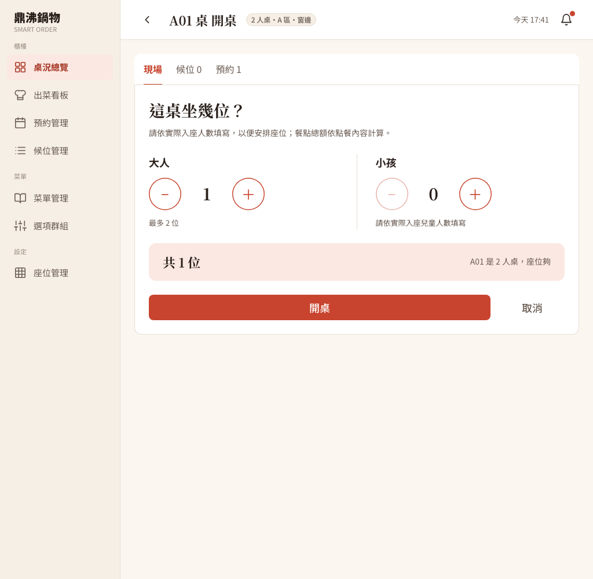

為什麼只在畫面停用按鈕還不夠？
同一個開桌動作有多個入口：櫃檯按鈕、候位報到、預約報到，也可能有人直接呼叫伺服器。瀏覽器只是其中一個，資料正確與否要由後端在保存前決定。
1. 空桌被占走，預約客人到店沒桌
修正前
A08 是四人桌，18:00 有一組四人預約，系統設定保留時段是預約前 30 分鐘到後 10 分鐘。17:45 這張桌已該留給預約客人，但資料庫的實體狀態仍是 AVAILABLE（還沒人坐）。開桌只看實體狀態，現場或候位客人先入座，預約客人到店時桌子已被占用。
修正後
實體狀態不變，另有「畫面狀態」顯示「預約保留」；現場與候位開桌收到 409 TABLE_RESERVED（目前資料狀態衝突），該筆訂位的客人仍可走報到流程。
清潔也有同樣的競態：清潔完成用一般讀取，若先讀到舊的 CLEANING，之後可能把另一個請求剛開好的桌改回空桌。
2. 服務端沒有人數界線
畫面上硬寫容量，擋不住直接送來的負數、空值、零人或超過桌位容量的請求；若用 32 位整數直接相加，極大的數值還可能溢位（變成負數）。
3. 員工操作路徑沒有完整保護
寬鬆的通用 API 規則若先放行，未登入的人也能呼叫開桌、清桌或候位操作；藏起按鈕不會替伺服器驗證員工身分。
4. 整合時序帶來的回歸（整合審查發現，後補修正）
若 COUNTER（櫃檯）讀取桌位設定也被限制成 MANAGER（店長）專用，既有預約畫面的桌數會消失；開桌請求若在切換桌號後才回來，舊回應會把新頁面導走，或把訊息顯示到錯的桌。
把「檢查、寫入、通知」放在正確的時間點
- 清潔共用開桌的桌位鎖：開桌本來就先對桌位取得資料列鎖，這次補上鎖內的預約保留、容量與既有用餐紀錄檢查；清潔完成原本沒用這把鎖，現在也先鎖同一筆桌位，再確認桌子仍在清潔、沒有未結束的用餐紀錄。需要同一把鎖的交易會排隊，拿到鎖後重讀最新狀態，舊的清潔請求就不能把新開的桌改回空桌。候位報到的外層交易用
READ_COMMITTED，讓等鎖之後看得到已提交的更新。 - 實體狀態與畫面狀態分開：後端仍保留真實
status為AVAILABLE，保留窗內有訂位時另外回displayStatus=RESERVED與heldFor（被哪筆訂位保留）。這樣畫面能顯示保留人、時間、人數，程式也不會把「預約保留」誤當成已入座。同一份保留快照用在整張總覽，不必每桌各查一次。保留時段外、但 115 分鐘內即將開始的訂位只顯示提醒，櫃檯確認後仍可開桌。 - 用伺服器規則檢查人數：成人與兒童都必須有值且不小於零，總人數至少一位、不超過座位數；計算總和前先轉成較大的整數型別，避免先溢位。瀏覽器也依真實容量限制步進器與候位清單，但後端仍再檢查一次。
- 權限切在 API 路徑與 HTTP 方法：桌況、開桌、清潔、候位只允許 COUNTER 或 MANAGER；桌位設定的讀取允許兩者，新增與修改只允許 MANAGER，櫃檯才讀得到預約頁與開桌頁需要的資料。桌位 QR（Quick Response，快速反應碼）圖片改在員工登入後由員工 API 取得檔案資料再放進列印頁，列印完釋放暫存網址。
- 只讓屬於目前桌號的請求更新畫面（整合時補上，不算原作者的缺失）：開桌頁為每次操作記錄桌號與「請求世代」，切到另一桌後，舊請求不論成功失敗，回應都不會導航或覆寫新桌的訊息；頁面等桌況與開桌選項 API 回來才顯示可操作的選項。桌況總覽每 60 秒重抓、每分鐘更新用餐時間，待報到數改由今天的訂位計算，不再顯示固定假數字。取消訂位與預約報到的桌況通知，等交易提交後才發出，帶的是提交後重讀的狀態。
- 版面範圍：依 UI（User Interface，使用者介面）規格以 1024 像素寬為驗收起點。390 像素只看開桌頁內容區塊（寬 266 像素、放得進容器），共用後台文件寬仍是 474 像素，所以不宣稱整個後台支援手機寬度。
數字與證據
- Git commit
11ec3c9。HTTP（Hypertext Transfer Protocol，超文字傳輸協定）101 項全部通過（92 項主要檢查加 9 項換桌預約報到補驗，未重複計入既有基線），涵蓋角色權限、人數界線、保留衝突、並行開桌／清潔與跨桌報到。完整 HTTP 紀錄。 - 瀏覽器 36 項全部通過，含真實開桌 POST 的延遲回應、預約保留、取消後即時通知、桌況計時與 QR 列印。完整瀏覽器紀錄。
- 關鍵實測：不帶員工憑證呼叫
/api/admin/tables回 401；COUNTER 修改桌位設定回 403；保留窗內開桌回 409TABLE_RESERVED；不合法人數回 400，資料庫不多出用餐紀錄；交錯的清潔與開桌，等待中的清潔讀到最新狀態後被拒，最後只有一筆未結束的用餐紀錄。 - 畫面：用餐時間從 102 變成 103 分鐘，超過 100 分鐘顯示紅框，頁首時鐘從 17:00 更新到 17:01；櫃檯預約頁的可預約比例是 72%（13／18 桌）。
- 晚到回應：瀏覽器送出 A 桌的真實開桌 POST，後端成功回 200，測試用 Playwright（用程式控制瀏覽器的工具）的
route.fetch暫緩這個回應（請求仍送到真的後端），先在 SPA（Single-Page Application，單頁應用程式）切到 B 桌，再放回 A 的成功回應，頁面仍停留在 B 桌、沒有鎖住 B 桌操作。這次只對真實成功回應做了執行期驗收；錯誤回應分支由獨立靜態審查確認有桌號與請求世代檢查。 - 後端 clean package 編譯 224 個來源檔通過，4 個既有測試類只編譯、沒有執行，也沒有新增單元測試；前端建置 423 個模組通過；程式審查的三項發現均已修正並複查。開桌頁人數提示的文案調整見 commit
1dc2c0e。


本篇真的用到的
- 資料列鎖加鎖內重驗：開桌與清潔共用同一把桌位鎖，
TableService.java。 - 狀態推導與 DTO（Data Transfer Object，資料傳輸物件）：實體
status與畫面displayStatus、heldFor分開，TableOverviewResponse.java、TableHoldService.java、TableHolds.java。 - 交易提交後才發通知（
afterCommit）：取消、報到後通知桌況，TableStatusNotifier.java。 - Spring Security 依 API 路徑與 HTTP 方法授權：
SecurityConfig.java。 - 前端防舊回應（請求世代）、定時重抓、Blob 與 Object URL：
TableOpen.jsx、TableOverview.jsx、qrPrint.js。 - 學到什麼：把「空桌」拆成實體狀態與能否供現場使用；每種操作列成小表（誰能做、先決條件、失敗狀態碼、何時通知），能對照 API、畫面與驗收是否一致。說明併發問題要指出誰先鎖哪筆資料、等待後重檢查什麼，並用最終資料庫狀態作證。
新手名詞表
- HTTP 狀態碼 400／401／403／409
- 400 請求資料不合規則；401 沒通過登入驗證；403 已辨識身分但權限不足；409 目前資料狀態與這項操作衝突。
- 資料列鎖（row lock）
- 交易要修改某筆資料時取得的鎖，其他需要同一把鎖的操作要等候，之後再檢查已更新的資料。
- 交易（transaction）與 afterCommit
- 交易把一組資料庫讀寫當成一次完整操作，失敗就不留下做一半的狀態；afterCommit 是交易成功保存後才執行的程式，避免通知先於資料寫入成功。
- READ_COMMITTED（讀取已提交資料）
- 資料庫隔離層級：查詢讀得到其他交易已完成提交的結果。
- 競態（race condition）
- 兩個操作的執行順序互相交錯，單獨看都合理，合在一起卻寫錯資料。
- 保留快照（hold snapshot）
- 在同一時間點整理當下有效的訂位資料，供桌況總覽與開桌檢查共用，避免各算出不同的保留結果。
- 請求世代
- 替每次操作記一個遞增編號，回應回來時編號對不上目前操作，就知道是舊請求，不更新畫面。
- Blob 與 Object URL
- Blob 是瀏覽器中的二進位檔案資料；Object URL 是頁面暫時讀取它的網址，列印結束後應釋放。
- COUNTER／MANAGER
- 店員角色：COUNTER 是櫃檯，MANAGER 是店長。